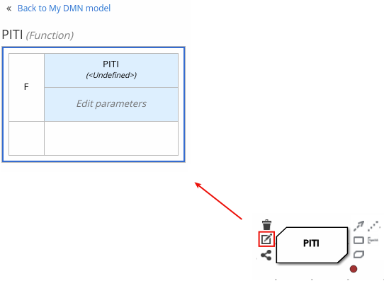
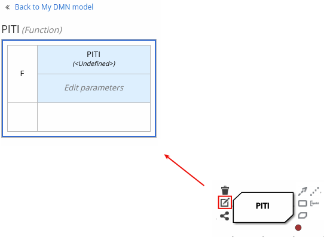
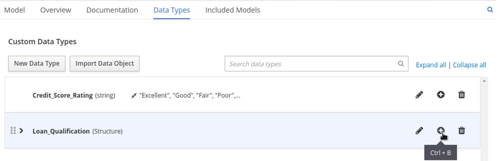
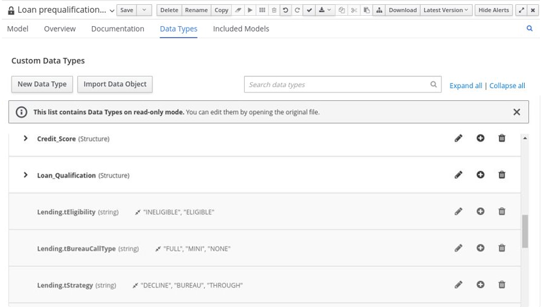
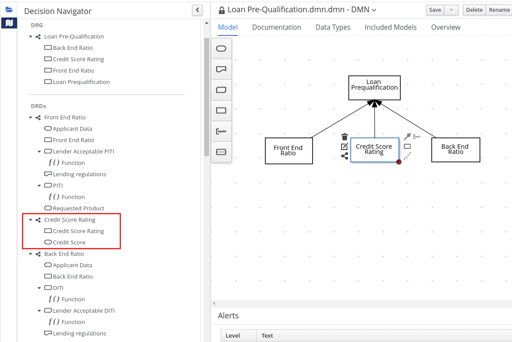
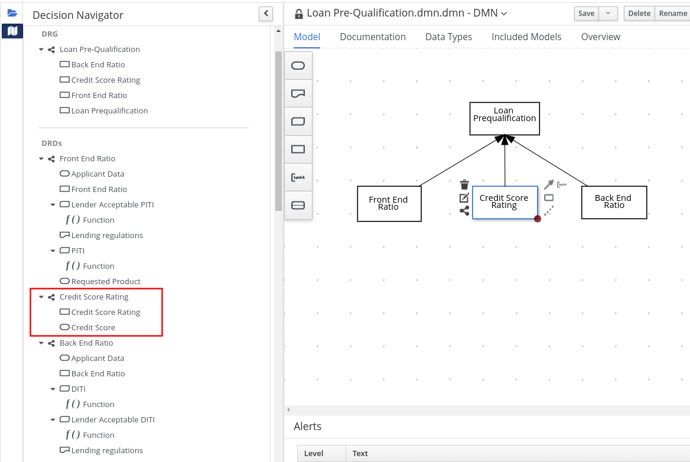

Decision Model and Notation (DMN)
Decision Model and Notation (DMN) is a standard established by the Object Management Group (OMG) for describing and modeling operational decisions. DMN defines an XML schema that enables DMN models to be shared between DMN-compliant platforms and across organizations so that business analysts and business rules developers can collaborate in designing and implementing DMN decision services. The DMN standard is similar to and can be used together with the Business Process Model and Notation (BPMN) standard for designing and modeling business processes.
For general information about the background and applications of DMN, see the Drools DMN landing page.
DMN conformance levels
The DMN specification defines three incremental levels of conformance in a software implementation. A product that claims compliance at one level must also be compliant with any preceding levels. For example, a conformance level 3 implementation must also include the supported components in conformance levels 1 and 2. For the formal definitions of each conformance level, see the OMG Decision Model and Notation specification.
The following list summarizes the three DMN conformance levels:
- Conformance level 1
-
A DMN conformance level 1 implementation supports decision requirement diagrams (DRDs), decision logic, and decision tables, but decision models are not executable. Any language can be used to define the expressions, including natural, unstructured languages.
- Conformance level 2
-
A DMN conformance level 2 implementation includes the requirements in conformance level 1, and supports Simplified Friendly Enough Expression Language (S-FEEL) expressions and fully executable decision models.
- Conformance level 3
-
A DMN conformance level 3 implementation includes the requirements in conformance levels 1 and 2, and supports Friendly Enough Expression Language (FEEL) expressions, the full set of boxed expressions, and fully executable decision models.
Drools DMN engine provides runtime support for DMN 1.1, 1.2, 1.3, and 1.4 models at conformance level 3.
KIE DMN Editor provides design support for DMN 1.2 models at conformance level 3.
You can design your DMN models directly with KIE DMN Editor online, directly with KIE DMN Editor in VSCode, or import existing DMN models into your Drools projects for deployment and execution.
Any DMN 1.1 and 1.3 models (do not contain DMN 1.3 features) that you import or open into KIE DMN Editor and save are converted to DMN 1.2 models.
DMN decision requirements diagram (DRD) components
A decision requirements diagram (DRD) is a visual representation of your DMN model. A DRD can represent part or all of the overall decision requirements graph (DRG) for the DMN model. DRDs trace business decisions using decision nodes, business knowledge models, sources of business knowledge, input data, and decision services.
The following table summarizes the components in a DRD:
| Component | Description | Notation | |
|---|---|---|---|
Elements |
Decision |
Node where one or more input elements determine an output based on defined decision logic. |

|
Business knowledge model |
Reusable function with one or more decision elements. Decisions that have the same logic but depend on different sub-input data or sub-decisions use business knowledge models to determine which procedure to follow. |
||
Knowledge source |
External authorities, documents, committees, or policies that regulate a decision or business knowledge model. Knowledge sources are references to real-world factors rather than executable business rules. |

|
|
Input data |
Information used in a decision node or a business knowledge model. Input data usually includes business-level concepts or objects relevant to the business, such as loan applicant data used in a lending strategy. |

|
|
Decision service |
Top-level decision containing a set of reusable decisions published as a service for invocation. A decision service can be invoked from an external application or a BPMN business process. |

|
|
Requirement connectors |
Information requirement |
Connection from an input data node or decision node to another decision node that requires the information. |

|
Knowledge requirement |
Connection from a business knowledge model to a decision node or to another business knowledge model that invokes the decision logic. |

|
|
Authority requirement |
Connection from an input data node or a decision node to a dependent knowledge source or from a knowledge source to a decision node, business knowledge model, or another knowledge source. |

|
|
Artifacts |
Text annotation |
Explanatory note associated with an input data node, decision node, business knowledge model, or knowledge source. |

|
Association |
Connection from an input data node, decision node, business knowledge model, or knowledge source to a text annotation. |

|
|
The following table summarizes the permitted connectors between DRD elements:
| Starts from | Connects to | Connection type | Example |
|---|---|---|---|
Decision |
Decision |
Information requirement |

|
Business knowledge model |
Decision |
Knowledge requirement |

|
Business knowledge model |

|
||
Decision service |
Decision |
Knowledge requirement |

|
Business knowledge model |

|
||
Input data |
Decision |
Information requirement |

|
Knowledge source |
Authority requirement |

|
|
Knowledge source |
Decision |
Authority requirement |

|
Business knowledge model |

|
||
Knowledge source |

|
||
Decision |
Text annotation |
Association |

|
Business knowledge model |

|
||
Knowledge source |

|
||
Input data |

|
The following example DRD illustrates some of these DMN components in practice:

The following example DRD illustrates DMN components that are part of a reusable decision service:
In a DMN decision service node, the decision nodes in the bottom segment incorporate input data from outside of the decision service to arrive at a final decision in the top segment of the decision service node. The resulting top-level decisions from the decision service are then implemented in any subsequent decisions or business knowledge requirements of the DMN model. You can reuse DMN decision services in other DMN models to apply the same decision logic with different input data and different outgoing connections.
Rule expressions in FEEL
Friendly Enough Expression Language (FEEL) is an expression language defined by the Object Management Group (OMG) DMN specification. FEEL expressions define the logic of a decision in a DMN model. FEEL is designed to facilitate both decision modeling and execution by assigning semantics to the decision model constructs. FEEL expressions in decision requirements diagrams (DRDs) occupy table cells in boxed expressions for decision nodes and business knowledge models.
The following sections provide just some highlights about some of the FEEL features. For complete information about FEEL, and built-in FEEL functions in DMN, you can reference the Drools DMN engine, DMN FEEL handbook.
Data types in FEEL
Friendly Enough Expression Language (FEEL) supports the following data types:
-
Numbers
-
Strings
-
Boolean values
-
Dates
-
Time
-
Date and time
-
Days and time duration
-
Years and months duration
-
Functions
-
Contexts
-
Ranges (or intervals)
-
Lists
The DMN specification currently does not provide an explicit way of declaring a variable as a function, context, range, or list, but Drools extends the DMN built-in types to support variables of these types.
|
The following list describes each data type:
- Numbers
-
Numbers in FEEL are based on the IEEE 754-2008 Decimal 128 format, with 34 digits of precision. Internally, numbers are represented in Java as
BigDecimalswithMathContext DECIMAL128. FEEL supports only one number data type, so the same type is used to represent both integers and floating point numbers.FEEL numbers use a dot (
.) as a decimal separator. FEEL does not support-INF,+INF, orNaN. FEEL usesnullto represent invalid numbers.Drools extends the DMN specification and supports additional number notations:
-
Scientific: You can use scientific notation with the suffix
e<exp>orE<exp>. For example,1.2e3is the same as writing the expression1.2*10**3, but is a literal instead of an expression. -
Hexadecimal: You can use hexadecimal numbers with the prefix
0x. For example,0xffis the same as the decimal number255. Both uppercase and lowercase letters are supported. For example,0XFFis the same as0xff. -
Type suffixes: You can use the type suffixes
f,F,d,D,l, andL. These suffixes are ignored.
-
- Strings
-
Strings in FEEL are any sequence of characters delimited by double quotation marks.
Example"John Doe"
- Boolean values
-
FEEL uses three-valued boolean logic, so a boolean logic expression may have values
true,false, ornull. - Dates
-
Date literals are not supported in FEEL, but you can use the built-in
date()function to construct date values. Date strings in FEEL follow the format defined in the XML Schema Part 2: Datatypes document. The format is"YYYY-MM-DD"whereYYYYis the year with four digits,MMis the number of the month with two digits, andDDis the number of the day.Example:
date( "2017-06-23" )
Date objects have time equal to
"00:00:00", which is midnight. The dates are considered to be local, without a timezone. - Time
-
Time literals are not supported in FEEL, but you can use the built-in
time()function to construct time values. Time strings in FEEL follow the format defined in the XML Schema Part 2: Datatypes document. The format is"hh:mm:ss[.uuu][(+-)hh:mm]"wherehhis the hour of the day (from00to23),mmis the minutes in the hour, andssis the number of seconds in the minute. Optionally, the string may define the number of milliseconds (uuu) within the second and contain a positive (+) or negative (-) offset from UTC time to define its timezone. Instead of using an offset, you can use the letterzto represent the UTC time, which is the same as an offset of-00:00. If no offset is defined, the time is considered to be local.Examples:
time( "04:25:12" ) time( "14:10:00+02:00" ) time( "22:35:40.345-05:00" ) time( "15:00:30z" )
Time values that define an offset or a timezone cannot be compared to local times that do not define an offset or a timezone.
- Date and time
-
Date and time literals are not supported in FEEL, but you can use the built-in
date and time()function to construct date and time values. Date and time strings in FEEL follow the format defined in the XML Schema Part 2: Datatypes document. The format is"<date>T<time>", where<date>and<time>follow the prescribed XML schema formatting, conjoined byT.Examples:
date and time( "2017-10-22T23:59:00" ) date and time( "2017-06-13T14:10:00+02:00" ) date and time( "2017-02-05T22:35:40.345-05:00" ) date and time( "2017-06-13T15:00:30z" )
Date and time values that define an offset or a timezone cannot be compared to local date and time values that do not define an offset or a timezone.
If your implementation of the DMN specification does not support spaces in the XML schema, use the keyword dateTimeas a synonym ofdate and time. - Days and time duration
-
Days and time duration literals are not supported in FEEL, but you can use the built-in
duration()function to construct days and time duration values. Days and time duration strings in FEEL follow the format defined in the XML Schema Part 2: Datatypes document, but are restricted to only days, hours, minutes and seconds. Months and years are not supported.Examples:
duration( "P1DT23H12M30S" ) duration( "P23D" ) duration( "PT12H" ) duration( "PT35M" )
If your implementation of the DMN specification does not support spaces in the XML schema, use the keyword dayTimeDurationas a synonym ofdays and time duration. - Years and months duration
-
Years and months duration literals are not supported in FEEL, but you can use the built-in
duration()function to construct days and time duration values. Years and months duration strings in FEEL follow the format defined in the XML Schema Part 2: Datatypes document, but are restricted to only years and months. Days, hours, minutes, or seconds are not supported.Examples:
duration( "P3Y5M" ) duration( "P2Y" ) duration( "P10M" ) duration( "P25M" )
If your implementation of the DMN specification does not support spaces in the XML schema, use the keyword yearMonthDurationas a synonym ofyears and months duration. - Functions
-
FEEL has
functionliterals (or anonymous functions) that you can use to create functions. The DMN specification currently does not provide an explicit way of declaring a variable as afunction, but Drools extends the DMN built-in types to support variables of functions.Example:
function(a, b) a + b
In this example, the FEEL expression creates a function that adds the parameters
aandband returns the result. - Contexts
-
FEEL has
contextliterals that you can use to create contexts. Acontextin FEEL is a list of key and value pairs, similar to maps in languages like Java. The DMN specification currently does not provide an explicit way of declaring a variable as acontext, but Drools extends the DMN built-in types to support variables of contexts.Example:
{ x : 5, y : 3 }In this example, the expression creates a context with two entries,
xandy, representing a coordinate in a chart.In DMN 1.2, another way to create contexts is to create an item definition that contains the list of keys as attributes, and then declare the variable as having that item definition type.
The Drools DMN API supports DMN
ItemDefinitionstructural types in aDMNContextrepresented in two ways:-
User-defined Java type: Must be a valid JavaBeans object defining properties and getters for each of the components in the DMN
ItemDefinition. If necessary, you can also use the@FEELPropertyannotation for those getters representing a component name which would result in an invalid Java identifier. -
java.util.Mapinterface: The map needs to define the appropriate entries, with the keys corresponding to the component name in the DMNItemDefinition.
-
- Ranges (or intervals)
-
FEEL has
rangeliterals that you can use to create ranges or intervals. Arangein FEEL is a value that defines a lower and an upper bound, where either can be open or closed. The DMN specification currently does not provide an explicit way of declaring a variable as arange, but Drools extends the DMN built-in types to support variables of ranges.The syntax of a range is defined in the following formats:
range := interval_start endpoint '..' endpoint interval_end interval_start := open_start | closed_start open_start := '(' | ']' closed_start := '[' interval_end := open_end | closed_end open_end := ')' | '[' closed_end := ']' endpoint := expressionThe expression for the endpoint must return a comparable value, and the lower bound endpoint must be lower than the upper bound endpoint.
For example, the following literal expression defines an interval between
1and10, including the boundaries (a closed interval on both endpoints):[ 1 .. 10 ]
The following literal expression defines an interval between 1 hour and 12 hours, including the lower boundary (a closed interval), but excluding the upper boundary (an open interval):
[ duration("PT1H") .. duration("PT12H") )You can use ranges in decision tables to test for ranges of values, or use ranges in simple literal expressions. For example, the following literal expression returns
trueif the value of a variablexis between0and100:x in [ 1 .. 100 ]
- Lists
-
FEEL has
listliterals that you can use to create lists of items. Alistin FEEL is represented by a comma-separated list of values enclosed in square brackets. The DMN specification currently does not provide an explicit way of declaring a variable as alist, but Drools extends the DMN built-in types to support variables of lists.Example:
[ 2, 3, 4, 5 ]
All lists in FEEL contain elements of the same type and are immutable. Elements in a list can be accessed by index, where the first element is
1. Negative indexes can access elements starting from the end of the list so that-1is the last element.For example, the following expression returns the second element of a list
x:x[2]
The following expression returns the second-to-last element of a list
x:x[-2]
Elements in a list can also be counted by the function
count, which uses the list of elements as the parameter.For example, the following expression returns
4:count([ 2, 3, 4, 5 ])
Built-in functions in FEEL
To promote interoperability with other platforms and systems, Friendly Enough Expression Language (FEEL) includes a library of built-in functions. The built-in FEEL functions are implemented in the Drools Decision Model and Notation (DMN) engine so that you can use the functions in your DMN decision services.
For detailed information about FEEL and built-in FEEL functions in DMN, you can reference the Drools DMN engine, DMN FEEL handbook.
Variable and function names in FEEL
Unlike many traditional expression languages, Friendly Enough Expression Language (FEEL) supports spaces and a few special characters as part of variable and function names. A FEEL name must start with a letter, ?, or _ element. The unicode letter characters are also allowed. Variable names cannot start with a language keyword, such as and, true, or every. The remaining characters in a variable name can be any of the starting characters, as well as digits, white spaces, and special characters such as +, -, /, *, ', and ..
For example, the following names are all valid FEEL names:
-
Age
-
Birth Date
-
Flight 234 pre-check procedure
Several limitations apply to variable and function names in FEEL:
- Ambiguity
-
The use of spaces, keywords, and other special characters as part of names can make FEEL ambiguous. The ambiguities are resolved in the context of the expression, matching names from left to right. The parser resolves the variable name as the longest name matched in scope. You can use
( )to disambiguate names if necessary. - Spaces in names
-
The DMN specification limits the use of spaces in FEEL names. According to the DMN specification, names can contain multiple spaces but not two consecutive spaces.
In order to make the language easier to use and avoid common errors due to spaces, Drools removes the limitation on the use of consecutive spaces. Drools supports variable names with any number of consecutive spaces, but normalizes them into a single space. For example, the variable references
First Namewith one space andFirst Namewith two spaces are both acceptable in Drools.Drools also normalizes the use of other white spaces, like the non-breakable white space that is common in web pages, tabs, and line breaks. From a Drools FEEL engine perspective, all of these characters are normalized into a single white space before processing.
- The keyword
in -
The keyword
inis the only keyword in the language that cannot be used as part of a variable name. Although the specifications allow the use of keywords in the middle of variable names, the use ofinin variable names conflicts with the grammar definition offor,everyandsomeexpression constructs.
DMN decision logic in boxed expressions
Boxed expressions in DMN are tables that you use to define the underlying logic of decision nodes and business knowledge models in a decision requirements diagram (DRD). Some boxed expressions can contain other boxed expressions, but the top-level boxed expression corresponds to the decision logic of a single DRD artifact. While DRDs represent the flow of a DMN decision model, boxed expressions define the actual decision logic of individual nodes. DRDs and boxed expressions together form a complete and functional DMN decision model.
The following are the types of DMN boxed expressions:
-
Decision tables
-
Literal expressions
-
Contexts
-
Relations
-
Functions
-
Invocations
-
Lists
KIE DMN Editor does not provide boxed list expressions, but supports a FEEL list data type that you can use in boxed literal expressions. For more information about the list data type and other FEEL data types in Drools, see Data types in FEEL.
|
All Friendly Enough Expression Language (FEEL) expressions that you use in your boxed expressions must conform to the FEEL syntax requirements in the OMG Decision Model and Notation specification.
DMN decision tables
A decision table in DMN is a visual representation of one or more business rules in a tabular format. You use decision tables to define rules for a decision node that applies those rules at a given point in the decision model. Each rule consists of a single row in the table, and includes columns that define the conditions (input) and outcome (output) for that particular row. The definition of each row is precise enough to derive the outcome using the values of the conditions. Input and output values can be FEEL expressions or defined data type values.
For example, the following decision table determines credit score ratings based on a defined range of a loan applicant’s credit score:

The following decision table determines the next step in a lending strategy for applicants depending on applicant loan eligibility and the bureau call type:

The following decision table determines applicant qualification for a loan as the concluding decision node in a loan prequalification decision model:
Decision tables are a popular way of modeling rules and decision logic, and are used in many methodologies (such as DMN) and implementation frameworks (such as Drools).
| Drools supports both DMN decision tables and Drools-native decision tables, but they are different types of assets with different syntax requirements and are not interchangeable. For more information about Drools-native decision tables in Drools, see Spreadsheet decision tables. |
Hit policies in DMN decision tables
Hit policies determine how to reach an outcome when multiple rules in a decision table match the provided input values. For example, if one rule in a decision table applies a sales discount to military personnel and another rule applies a discount to students, then when a customer is both a student and in the military, the decision table hit policy must indicate whether to apply one discount or the other (Unique, First) or both discounts (Collect Sum). You specify the single character of the hit policy (U, F, C+) in the upper-left corner of the decision table.
The following decision table hit policies are supported in DMN:
-
Unique (U): Permits only one rule to match. Any overlap raises an error.
-
Any (A): Permits multiple rules to match, but they must all have the same output. If multiple matching rules do not have the same output, an error is raised.
-
Priority (P): Permits multiple rules to match, with different outputs. The output that comes first in the output values list is selected.
-
First (F): Uses the first match in rule order.
-
Collect (C+, C>, C<, C#): Aggregates output from multiple rules based on an aggregation function.
-
Collect ( C ): Aggregates values in an arbitrary list.
-
Collect Sum (C+): Outputs the sum of all collected values. Values must be numeric.
-
Collect Min (C<): Outputs the minimum value among the matches. The resulting values must be comparable, such as numbers, dates, or text (lexicographic order).
-
Collect Max (C>): Outputs the maximum value among the matches. The resulting values must be comparable, such as numbers, dates or text (lexicographic order).
-
Collect Count (C#): Outputs the number of matching rules.
-
Boxed literal expressions
A boxed literal expression in DMN is a literal FEEL expression as text in a table cell, typically with a labeled column and an assigned data type. You use boxed literal expressions to define simple or complex node logic or decision data directly in FEEL for a particular node in a decision. Literal FEEL expressions must conform to FEEL syntax requirements in the OMG Decision Model and Notation specification.
For example, the following boxed literal expression defines the minimum acceptable PITI calculation (principal, interest, taxes, and insurance) in a lending decision, where acceptable rate is a variable defined in the DMN model:

The following boxed literal expression sorts a list of possible dating candidates (soul mates) in an online dating application based on their score on criteria such as age, location, and interests:

Boxed context expressions
A boxed context expression in DMN is a set of variable names and values with a result value. Each name-value pair is a context entry. You use context expressions to represent data definitions in decision logic and set a value for a desired decision element within the DMN decision model. A value in a boxed context expression can be a data type value or FEEL expression, or can contain a nested sub-expression of any type, such as a decision table, a literal expression, or another context expression.
For example, the following boxed context expression defines the factors for sorting delayed passengers in a flight-rebooking decision model, based on defined data types (tPassengerTable, tFlightNumberList):
The following boxed context expression defines the factors that determine whether a loan applicant can meet minimum mortgage payments based on principal, interest, taxes, and insurance (PITI), represented as a front-end ratio calculation with a sub-context expression:
Boxed relation expressions
A boxed relation expression in DMN is a traditional data table with information about given entities, listed as rows. You use boxed relation tables to define decision data for relevant entities in a decision at a particular node. Boxed relation expressions are similar to context expressions in that they set variable names and values, but relation expressions contain no result value and list all variable values based on a single defined variable in each column.
For example, the following boxed relation expression provides information about employees in an employee rostering decision:

Boxed function expressions
A boxed function expression in DMN is a parameterized boxed expression containing a literal FEEL expression, a nested context expression of an external JAVA or PMML function, or a nested boxed expression of any type. By default, all business knowledge models are defined as boxed function expressions. You use boxed function expressions to call functions on your decision logic and to define all business knowledge models.
For example, the following boxed function expression determines airline flight capacity in a flight-rebooking decision model:

The following boxed function expression contains a basic Java function as a context expression for determining absolute value in a decision model calculation:

The following boxed function expression determines a monthly mortgage installment as a business knowledge model in a lending decision, with the function value defined as a nested context expression:
The following boxed function expression uses a PMML model included in the DMN file to define the minimum acceptable PITI calculation (principal, interest, taxes, and insurance) in a lending decision:

Boxed invocation expressions
A boxed invocation expression in DMN is a boxed expression that invokes a business knowledge model. A boxed invocation expression contains the name of the business knowledge model to be invoked and a list of parameter bindings. Each binding is represented by two boxed expressions on a row: The box on the left contains the name of a parameter and the box on the right contains the binding expression whose value is assigned to the parameter to evaluate the invoked business knowledge model. You use boxed invocations to invoke at a particular decision node a business knowledge model defined in the decision model.
For example, the following boxed invocation expression invokes a Reassign Next Passenger business knowledge model as the concluding decision node in a flight-rebooking decision model:
The following boxed invocation expression invokes an InstallmentCalculation business knowledge model to calculate a monthly installment amount for a loan before proceeding to affordability decisions:

Boxed list expressions
A boxed list expression in DMN represents a FEEL list of items. You use boxed lists to define lists of relevant items for a particular node in a decision. You can also use literal FEEL expressions for list items in cells to create more complex lists.
For example, the following boxed list expression identifies approved credit score agencies in a loan application decision service:

The following boxed list expression also identifies approved credit score agencies but uses FEEL logic to define the agency status (Inc., LLC, SA, GA) based on a DMN input node:
DMN model example
The following is a real-world DMN model example that demonstrates how you can use decision modeling to reach a decision based on input data, circumstances, and company guidelines. In this scenario, a flight from San Diego to New York is canceled, requiring the affected airline to find alternate arrangements for its inconvenienced passengers.
First, the airline collects the information necessary to determine how best to get the travelers to their destinations:
- Input data
-
-
List of flights
-
List of passengers
-
- Decisions
-
-
Prioritize the passengers who will get seats on a new flight
-
Determine which flights those passengers will be offered
-
- Business knowledge models
-
-
The company process for determining passenger priority
-
Any flights that have space available
-
Company rules for determining how best to reassign inconvenienced passengers
-
The airline then uses the DMN standard to model its decision process in the following decision requirements diagram (DRD) for determining the best rebooking solution:

Similar to flowcharts, DRDs use shapes to represent the different elements in a process. Ovals contain the two necessary input data, rectangles contain the decision points in the model, and rectangles with clipped corners (business knowledge models) contain reusable logic that can be repeatedly invoked.
The DRD draws logic for each element from boxed expressions that provide variable definitions using FEEL expressions or data type values.
Some boxed expressions are basic, such as the following decision for establishing a prioritized waiting list:
Some boxed expressions are more complex with greater detail and calculation, such as the following business knowledge model for reassigning the next delayed passenger:
The following is the DMN source file for this decision model:
<dmn:definitions xmlns="https://www.drools.org/kie-dmn/Flight-rebooking" xmlns:dmn="http://www.omg.org/spec/DMN/20151101/dmn.xsd" xmlns:feel="http://www.omg.org/spec/FEEL/20140401" id="_0019_flight_rebooking" name="0019-flight-rebooking" namespace="https://www.drools.org/kie-dmn/Flight-rebooking">
<dmn:itemDefinition id="_tFlight" name="tFlight">
<dmn:itemComponent id="_tFlight_Flight" name="Flight Number">
<dmn:typeRef>feel:string</dmn:typeRef>
</dmn:itemComponent>
<dmn:itemComponent id="_tFlight_From" name="From">
<dmn:typeRef>feel:string</dmn:typeRef>
</dmn:itemComponent>
<dmn:itemComponent id="_tFlight_To" name="To">
<dmn:typeRef>feel:string</dmn:typeRef>
</dmn:itemComponent>
<dmn:itemComponent id="_tFlight_Dep" name="Departure">
<dmn:typeRef>feel:dateTime</dmn:typeRef>
</dmn:itemComponent>
<dmn:itemComponent id="_tFlight_Arr" name="Arrival">
<dmn:typeRef>feel:dateTime</dmn:typeRef>
</dmn:itemComponent>
<dmn:itemComponent id="_tFlight_Capacity" name="Capacity">
<dmn:typeRef>feel:number</dmn:typeRef>
</dmn:itemComponent>
<dmn:itemComponent id="_tFlight_Status" name="Status">
<dmn:typeRef>feel:string</dmn:typeRef>
</dmn:itemComponent>
</dmn:itemDefinition>
<dmn:itemDefinition id="_tFlightTable" isCollection="true" name="tFlightTable">
<dmn:typeRef>tFlight</dmn:typeRef>
</dmn:itemDefinition>
<dmn:itemDefinition id="_tPassenger" name="tPassenger">
<dmn:itemComponent id="_tPassenger_Name" name="Name">
<dmn:typeRef>feel:string</dmn:typeRef>
</dmn:itemComponent>
<dmn:itemComponent id="_tPassenger_Status" name="Status">
<dmn:typeRef>feel:string</dmn:typeRef>
</dmn:itemComponent>
<dmn:itemComponent id="_tPassenger_Miles" name="Miles">
<dmn:typeRef>feel:number</dmn:typeRef>
</dmn:itemComponent>
<dmn:itemComponent id="_tPassenger_Flight" name="Flight Number">
<dmn:typeRef>feel:string</dmn:typeRef>
</dmn:itemComponent>
</dmn:itemDefinition>
<dmn:itemDefinition id="_tPassengerTable" isCollection="true" name="tPassengerTable">
<dmn:typeRef>tPassenger</dmn:typeRef>
</dmn:itemDefinition>
<dmn:itemDefinition id="_tFlightNumberList" isCollection="true" name="tFlightNumberList">
<dmn:typeRef>feel:string</dmn:typeRef>
</dmn:itemDefinition>
<dmn:inputData id="i_Flight_List" name="Flight List">
<dmn:variable name="Flight List" typeRef="tFlightTable"/>
</dmn:inputData>
<dmn:inputData id="i_Passenger_List" name="Passenger List">
<dmn:variable name="Passenger List" typeRef="tPassengerTable"/>
</dmn:inputData>
<dmn:decision name="Prioritized Waiting List" id="d_PrioritizedWaitingList">
<dmn:variable name="Prioritized Waiting List" typeRef="tPassengerTable"/>
<dmn:informationRequirement>
<dmn:requiredInput href="#i_Passenger_List"/>
</dmn:informationRequirement>
<dmn:informationRequirement>
<dmn:requiredInput href="#i_Flight_List"/>
</dmn:informationRequirement>
<dmn:knowledgeRequirement>
<dmn:requiredKnowledge href="#b_PassengerPriority"/>
</dmn:knowledgeRequirement>
<dmn:context>
<dmn:contextEntry>
<dmn:variable name="Cancelled Flights" typeRef="tFlightNumberList"/>
<dmn:literalExpression>
<dmn:text>Flight List[ Status = "cancelled" ].Flight Number</dmn:text>
</dmn:literalExpression>
</dmn:contextEntry>
<dmn:contextEntry>
<dmn:variable name="Waiting List" typeRef="tPassengerTable"/>
<dmn:literalExpression>
<dmn:text>Passenger List[ list contains( Cancelled Flights, Flight Number ) ]</dmn:text>
</dmn:literalExpression>
</dmn:contextEntry>
<dmn:contextEntry>
<dmn:literalExpression>
<dmn:text>sort( Waiting List, passenger priority )</dmn:text>
</dmn:literalExpression>
</dmn:contextEntry>
</dmn:context>
</dmn:decision>
<dmn:decision name="Rebooked Passengers" id="d_RebookedPassengers">
<dmn:variable name="Rebooked Passengers" typeRef="tPassengerTable"/>
<dmn:informationRequirement>
<dmn:requiredDecision href="#d_PrioritizedWaitingList"/>
</dmn:informationRequirement>
<dmn:informationRequirement>
<dmn:requiredInput href="#i_Flight_List"/>
</dmn:informationRequirement>
<dmn:knowledgeRequirement>
<dmn:requiredKnowledge href="#b_ReassignNextPassenger"/>
</dmn:knowledgeRequirement>
<dmn:invocation>
<dmn:literalExpression>
<dmn:text>reassign next passenger</dmn:text>
</dmn:literalExpression>
<dmn:binding>
<dmn:parameter name="Waiting List"/>
<dmn:literalExpression>
<dmn:text>Prioritized Waiting List</dmn:text>
</dmn:literalExpression>
</dmn:binding>
<dmn:binding>
<dmn:parameter name="Reassigned Passengers List"/>
<dmn:literalExpression>
<dmn:text>[]</dmn:text>
</dmn:literalExpression>
</dmn:binding>
<dmn:binding>
<dmn:parameter name="Flights"/>
<dmn:literalExpression>
<dmn:text>Flight List</dmn:text>
</dmn:literalExpression>
</dmn:binding>
</dmn:invocation>
</dmn:decision>
<dmn:businessKnowledgeModel id="b_PassengerPriority" name="passenger priority">
<dmn:encapsulatedLogic>
<dmn:formalParameter name="Passenger1" typeRef="tPassenger"/>
<dmn:formalParameter name="Passenger2" typeRef="tPassenger"/>
<dmn:decisionTable hitPolicy="UNIQUE">
<dmn:input id="b_Passenger_Priority_dt_i_P1_Status" label="Passenger1.Status">
<dmn:inputExpression typeRef="feel:string">
<dmn:text>Passenger1.Status</dmn:text>
</dmn:inputExpression>
<dmn:inputValues>
<dmn:text>"gold", "silver", "bronze"</dmn:text>
</dmn:inputValues>
</dmn:input>
<dmn:input id="b_Passenger_Priority_dt_i_P2_Status" label="Passenger2.Status">
<dmn:inputExpression typeRef="feel:string">
<dmn:text>Passenger2.Status</dmn:text>
</dmn:inputExpression>
<dmn:inputValues>
<dmn:text>"gold", "silver", "bronze"</dmn:text>
</dmn:inputValues>
</dmn:input>
<dmn:input id="b_Passenger_Priority_dt_i_P1_Miles" label="Passenger1.Miles">
<dmn:inputExpression typeRef="feel:string">
<dmn:text>Passenger1.Miles</dmn:text>
</dmn:inputExpression>
</dmn:input>
<dmn:output id="b_Status_Priority_dt_o" label="Passenger1 has priority">
<dmn:outputValues>
<dmn:text>true, false</dmn:text>
</dmn:outputValues>
<dmn:defaultOutputEntry>
<dmn:text>false</dmn:text>
</dmn:defaultOutputEntry>
</dmn:output>
<dmn:rule id="b_Passenger_Priority_dt_r1">
<dmn:inputEntry id="b_Passenger_Priority_dt_r1_i1">
<dmn:text>"gold"</dmn:text>
</dmn:inputEntry>
<dmn:inputEntry id="b_Passenger_Priority_dt_r1_i2">
<dmn:text>"gold"</dmn:text>
</dmn:inputEntry>
<dmn:inputEntry id="b_Passenger_Priority_dt_r1_i3">
<dmn:text>>= Passenger2.Miles</dmn:text>
</dmn:inputEntry>
<dmn:outputEntry id="b_Passenger_Priority_dt_r1_o1">
<dmn:text>true</dmn:text>
</dmn:outputEntry>
</dmn:rule>
<dmn:rule id="b_Passenger_Priority_dt_r2">
<dmn:inputEntry id="b_Passenger_Priority_dt_r2_i1">
<dmn:text>"gold"</dmn:text>
</dmn:inputEntry>
<dmn:inputEntry id="b_Passenger_Priority_dt_r2_i2">
<dmn:text>"silver","bronze"</dmn:text>
</dmn:inputEntry>
<dmn:inputEntry id="b_Passenger_Priority_dt_r2_i3">
<dmn:text>-</dmn:text>
</dmn:inputEntry>
<dmn:outputEntry id="b_Passenger_Priority_dt_r2_o1">
<dmn:text>true</dmn:text>
</dmn:outputEntry>
</dmn:rule>
<dmn:rule id="b_Passenger_Priority_dt_r3">
<dmn:inputEntry id="b_Passenger_Priority_dt_r3_i1">
<dmn:text>"silver"</dmn:text>
</dmn:inputEntry>
<dmn:inputEntry id="b_Passenger_Priority_dt_r3_i2">
<dmn:text>"silver"</dmn:text>
</dmn:inputEntry>
<dmn:inputEntry id="b_Passenger_Priority_dt_r3_i3">
<dmn:text>>= Passenger2.Miles</dmn:text>
</dmn:inputEntry>
<dmn:outputEntry id="b_Passenger_Priority_dt_r3_o1">
<dmn:text>true</dmn:text>
</dmn:outputEntry>
</dmn:rule>
<dmn:rule id="b_Passenger_Priority_dt_r4">
<dmn:inputEntry id="b_Passenger_Priority_dt_r4_i1">
<dmn:text>"silver"</dmn:text>
</dmn:inputEntry>
<dmn:inputEntry id="b_Passenger_Priority_dt_r4_i2">
<dmn:text>"bronze"</dmn:text>
</dmn:inputEntry>
<dmn:inputEntry id="b_Passenger_Priority_dt_r4_i3">
<dmn:text>-</dmn:text>
</dmn:inputEntry>
<dmn:outputEntry id="b_Passenger_Priority_dt_r4_o1">
<dmn:text>true</dmn:text>
</dmn:outputEntry>
</dmn:rule>
<dmn:rule id="b_Passenger_Priority_dt_r5">
<dmn:inputEntry id="b_Passenger_Priority_dt_r5_i1">
<dmn:text>"bronze"</dmn:text>
</dmn:inputEntry>
<dmn:inputEntry id="b_Passenger_Priority_dt_r5_i2">
<dmn:text>"bronze"</dmn:text>
</dmn:inputEntry>
<dmn:inputEntry id="b_Passenger_Priority_dt_r5_i3">
<dmn:text>>= Passenger2.Miles</dmn:text>
</dmn:inputEntry>
<dmn:outputEntry id="b_Passenger_Priority_dt_r5_o1">
<dmn:text>true</dmn:text>
</dmn:outputEntry>
</dmn:rule>
</dmn:decisionTable>
</dmn:encapsulatedLogic>
<dmn:variable name="passenger priority" typeRef="feel:boolean"/>
</dmn:businessKnowledgeModel>
<dmn:businessKnowledgeModel id="b_ReassignNextPassenger" name="reassign next passenger">
<dmn:encapsulatedLogic>
<dmn:formalParameter name="Waiting List" typeRef="tPassengerTable"/>
<dmn:formalParameter name="Reassigned Passengers List" typeRef="tPassengerTable"/>
<dmn:formalParameter name="Flights" typeRef="tFlightTable"/>
<dmn:context>
<dmn:contextEntry>
<dmn:variable name="Next Passenger" typeRef="tPassenger"/>
<dmn:literalExpression>
<dmn:text>Waiting List[1]</dmn:text>
</dmn:literalExpression>
</dmn:contextEntry>
<dmn:contextEntry>
<dmn:variable name="Original Flight" typeRef="tFlight"/>
<dmn:literalExpression>
<dmn:text>Flights[ Flight Number = Next Passenger.Flight Number ][1]</dmn:text>
</dmn:literalExpression>
</dmn:contextEntry>
<dmn:contextEntry>
<dmn:variable name="Best Alternate Flight" typeRef="tFlight"/>
<dmn:literalExpression>
<dmn:text>Flights[ From = Original Flight.From and To = Original Flight.To and Departure > Original Flight.Departure and Status = "scheduled" and has capacity( item, Reassigned Passengers List ) ][1]</dmn:text>
</dmn:literalExpression>
</dmn:contextEntry>
<dmn:contextEntry>
<dmn:variable name="Reassigned Passenger" typeRef="tPassenger"/>
<dmn:context>
<dmn:contextEntry>
<dmn:variable name="Name" typeRef="feel:string"/>
<dmn:literalExpression>
<dmn:text>Next Passenger.Name</dmn:text>
</dmn:literalExpression>
</dmn:contextEntry>
<dmn:contextEntry>
<dmn:variable name="Status" typeRef="feel:string"/>
<dmn:literalExpression>
<dmn:text>Next Passenger.Status</dmn:text>
</dmn:literalExpression>
</dmn:contextEntry>
<dmn:contextEntry>
<dmn:variable name="Miles" typeRef="feel:number"/>
<dmn:literalExpression>
<dmn:text>Next Passenger.Miles</dmn:text>
</dmn:literalExpression>
</dmn:contextEntry>
<dmn:contextEntry>
<dmn:variable name="Flight Number" typeRef="feel:string"/>
<dmn:literalExpression>
<dmn:text>Best Alternate Flight.Flight Number</dmn:text>
</dmn:literalExpression>
</dmn:contextEntry>
</dmn:context>
</dmn:contextEntry>
<dmn:contextEntry>
<dmn:variable name="Remaining Waiting List" typeRef="tPassengerTable"/>
<dmn:literalExpression>
<dmn:text>remove( Waiting List, 1 )</dmn:text>
</dmn:literalExpression>
</dmn:contextEntry>
<dmn:contextEntry>
<dmn:variable name="Updated Reassigned Passengers List" typeRef="tPassengerTable"/>
<dmn:literalExpression>
<dmn:text>append( Reassigned Passengers List, Reassigned Passenger )</dmn:text>
</dmn:literalExpression>
</dmn:contextEntry>
<dmn:contextEntry>
<dmn:literalExpression>
<dmn:text>if count( Remaining Waiting List ) > 0 then reassign next passenger( Remaining Waiting List, Updated Reassigned Passengers List, Flights ) else Updated Reassigned Passengers List</dmn:text>
</dmn:literalExpression>
</dmn:contextEntry>
</dmn:context>
</dmn:encapsulatedLogic>
<dmn:variable name="reassign next passenger" typeRef="tPassengerTable"/>
<dmn:knowledgeRequirement>
<dmn:requiredKnowledge href="#b_HasCapacity"/>
</dmn:knowledgeRequirement>
</dmn:businessKnowledgeModel>
<dmn:businessKnowledgeModel id="b_HasCapacity" name="has capacity">
<dmn:encapsulatedLogic>
<dmn:formalParameter name="flight" typeRef="tFlight"/>
<dmn:formalParameter name="rebooked list" typeRef="tPassengerTable"/>
<dmn:literalExpression>
<dmn:text>flight.Capacity > count( rebooked list[ Flight Number = flight.Flight Number ] )</dmn:text>
</dmn:literalExpression>
</dmn:encapsulatedLogic>
<dmn:variable name="has capacity" typeRef="feel:boolean"/>
</dmn:businessKnowledgeModel>
</dmn:definitions>DMN support in Drools
Drools DMN engine provides runtime support for DMN 1.1, 1.2, 1.3, and 1.4 models at conformance level 3.
KIE DMN Editor provides design support for DMN 1.2 models at conformance level 3.
You can integrate DMN models with your Drools decision services in several ways:
-
Design your DMN models using the KIE DMN Editor online.
-
Design your DMN models using the KIE DMN Editor in VSCode.
-
Import DMN files into your project by opening them in KIE DMN Editor. Any DMN 1.1 and 1.3 models (do not contain DMN 1.3 features) that you import or open into KIE DMN Editor and save are converted to DMN 1.2 models.
-
Package DMN files as part of your project knowledge JAR (KJAR) file without KIE DMN Editor.
The following table summarizes the design and runtime support for each DMN version in Drools:
DMN version |
DMN engine support |
DMN modeler support |
|
|---|---|---|---|
Execution |
Open |
Save |
|
DMN 1.1 |
yes |
yes |
no |
DMN 1.2 |
yes |
yes |
yes |
DMN 1.3 |
yes |
yes |
no |
DMN 1.4 |
yes |
no |
no |
In addition to all DMN conformance level 3 requirements, Drools DMN engine also includes enhancements and fixes to FEEL and DMN model components to optimize the experience of implementing DMN decision services with Drools. From a platform perspective, DMN models are like any other business asset in Drools, such as DRL files or spreadsheet decision tables, that you can include in your Drools project and deploy in order to start your DMN decision services.
For more information about including external DMN files with your Drools project packaging and deployment method, see the Build, Deploy, Utilize and Run section.
You can design a new DMN decision service using a Kogito microservice as an alternative for the cloud-native capabilities of DMN decision services. You could also migrate your existing DMN service to a Kogito microservice. For more information about Kogito or migrating to Kogito microservices, see the Kogito website for documentation.
FEEL enhancements in Drools DMN engine
Drools DMN engine includes the following enhancements and other changes to FEEL in the current DMN implementation:
-
Space Sensitivity: This DMN implementation of the FEEL language is space insensitive. The goal is to avoid non-deterministic behavior based on the context and differences in behavior based on invisible characters, such as white spaces. This means that for this implementation, a variable named
first namewith one space is exactly the same asfirst namewith two spaces in it. -
List functions
or()andand(): The specification defines two list functions namedor()andand(). However, according to the FEEL grammar, these are not valid function names, asandandorare reserved keywords. This implementation renames these functions toany()andall()respectively, in anticipation for DMN 1.2. -
Keyword
incannot be used in variable names: The specification defines that any keyword can be reused as part of a variable name, but the ambiguities caused with thefor … in … returnloop prevent the reuse of theinkeyword. All other keywords are supported as part of variable names. -
Keywords are not supported in attributes of anonymous types: FEEL is not a strongly typed language and the parser must resolve ambiguity in name parts of an attribute of an anonymous type. The parser supports reusable keywords as part of a variable name defined in the scope, but the parser does not support keywords in attributes of an anonymous type. For example,
for item in Order.items return Federal Tax for Item( item )is a valid and supported FEEL expression, where a function namedFederal Tax for Item(…)can be defined and invoked correctly in the scope. However, the expressionfor i in [ {x and y : true, n : 1}, {x and y : false, n: 2} ] return i.x and yis not supported because anonymous types are defined in the iteration context of theforexpression and the parser cannot resolve the ambiguity. -
Support for date and time literals on ranges: According to the grammar rules #8, #18, #19, #34 and #62,
date and timeliterals are supported in ranges (pages 110-111). Chapter 10.3.2.7 on page 114, on the other hand, contradicts the grammar and says they are not supported. This implementation chose to follow the grammar and supportdate and timeliterals on ranges, as well as extend the specification to support any arbitrary expression (see extensions below). -
Invalid time syntax: Chapter 10.3.2.3.4 on page 112 and bullet point about
timeon page 131 both state that thetimestring lexical representation follows the XML Schema Datatypes specification as well as ISO 8601. According to the XML Schema specification (https://www.w3.org/TR/xmlschema-2/#time), the lexical representation of a time follows the patternhh:mm:ss.ssswithout any leading character. The DMN specification uses a leading "T" in several examples, that we understand is a typo and not in accordance with the standard. -
Support for scientific and hexadecimal notations: This implementation supports scientific and hexadecimal notation for numbers. For example,
1.2e5(scientific notation),0xD5(hexadecimal notation). -
Support for expressions as end points in ranges: This implementation supports expressions as endpoints for ranges. For example,
[date("2016-11-24")..date("2016-11-27")] -
Support for additional types: The specification only defines the following as basic types of the language:
-
number
-
string
-
boolean
-
days and time duration
-
years and month duration
-
time
-
date and time
For completeness and orthogonality, this implementation also supports the following types:
-
context
-
list
-
range
-
function
-
unary test
-
-
Support for unary tests: For completeness and orthogonality, unary tests are supported as first class citizens in the language. They are functions with an implicit single parameter and can be invoked in the same way as functions. For example,
UnaryTestAsFunction.feel{ is minor : < 18, Bob is minor : is minor( bob.age ) } -
Support for additional built-in functions: The following additional functions are supported:
-
now(): Returns the current local date and time. -
today(): Returns the current local date. -
decision table(): Returns a decision table function, although the specification mentions a decision table. The function on page 114 is not implementable as defined. -
string( mask, p… ): Returns a string formatted as per the mask. See Java String.format() for details on the mask syntax. For example,string( "%4.2f", 7.1298 )returns the string"7.12".
-
-
Support for additional date and time arithmetics: Subtracting two dates returns a day and time duration with the number of days between the two dates, ignoring daylight savings. For example,
DateArithmetic.feeldate( "2017-05-12" ) - date( "2017-04-25" ) = duration( "P17D" )
DMN model enhancements in Drools DMN engine
Drools DMN engine includes the following enhancements to DMN model support in the current DMN implementation:
-
Support for types with spaces on names: The DMN XML schema defines type refs such as QNames. The QNames do not allow spaces. Therefore, it is not possible to use types like FEEL
date and time,days and time durationoryears and months duration. This implementation does parse such typerefs as strings and allows type names with spaces. However, in order to comply with the XML schema, it also adds the following aliases to such types that can be used instead:-
date and time=dateTime -
days and time duration=durationordayTimeDuration -
years and months duration=durationoryearMonthDurationNote that, for the "duration" types, the user can simply use
durationand the Drools DMN engine will infer the proper duration, eitherdays and time durationoryears and months duration.
-
-
Lists support heterogeneous element types: Currently this implementation supports lists with heterogeneous element types. This is an experimental extension and does limit the functionality of some functions and filters. This decision will be re-evaluated in the future.
-
TypeRef link between Decision Tables and Item Definitions: On decision tables/input clause, if no values list is defined, the Drools DMN engine automatically checks the type reference and applies the allowed values check if it is defined.
Configurable DMN properties in Drools DMN engine
Drools DMN engine provides the following DMN properties that you can configure when you execute your DMN models on your client application.
You can configure some of these properties using the kmodule.xml file in your Drools project (preferred method also for the previous traditional KIE Server deployment).
- org.kie.dmn.strictConformance
-
When enabled, this property disables by default any extensions or profiles provided beyond the DMN standard, such as some helper functions or enhanced features of DMN 1.2 backported into DMN 1.1. You can use this property to configure the Drools DMN engine to support only pure DMN features, such as when running the DMN Technology Compatibility Kit (TCK).
Default value:
false-Dorg.kie.dmn.strictConformance=true - org.kie.dmn.runtime.typecheck
-
When enabled, this property enables verification of actual values conforming to their declared types in the DMN model, as input or output of DRD elements. You can use this property to verify whether data supplied to the DMN model or produced by the DMN model is compliant with what is specified in the model.
Default value:
false-Dorg.kie.dmn.runtime.typecheck=true - org.kie.dmn.decisionservice.coercesingleton
-
By default, this property makes the result of a decision service defining a single output decision be the single value of the output decision value. When disabled, this property makes the result of a decision service defining a single output decision be a
contextwith the single entry for that decision. You can use this property to adjust your decision service outputs according to your project requirements.Default value:
true-Dorg.kie.dmn.decisionservice.coercesingleton=false - org.kie.dmn.profiles.$PROFILE_NAME
-
When valorized with a Java fully qualified name, this property loads a DMN profile onto the Drools DMN engine at start time. You can use this property to implement a predefined DMN profile with supported features different from or beyond the DMN standard. For example, if you are creating DMN models using the Signavio DMN modeller, use this property to implement features from the Signavio DMN profile into your DMN decision service.
-Dorg.kie.dmn.profiles.signavio=org.kie.dmn.signavio.KieDMNSignavioProfile - org.kie.dmn.runtime.listeners.$LISTENER_NAME
-
When valorized with a Java fully qualified name, this property loads and registers a DMN Runtime Listener onto the Drools DMN engine at start time. You can use this property to register a DMN listener in order to be notified of several events during DMN model evaluations.
To configure this property, modify this property in the
kmodule.xmlfile of your project (preferred method also for the previous traditional KIE Server deployment).<kmodule xmlns="http://www.drools.org/xsd/kmodule"> <configuration> <property key="org.kie.dmn.runtime.listeners.mylistener" value="org.acme.MyDMNListener"/> </configuration> </kmodule>Alternatively, you can configure this property globally for your Drools environment; modify this property using a command terminal or any other global application configuration mechanism.
-Dorg.kie.dmn.runtime.listeners.mylistener=org.acme.MyDMNListener
Configurable DMN validation in Drools
By default, the kie-maven-plugin component in the pom.xml file of your Drools project uses the following <validateDMN> configurations to perform pre-compilation validation of DMN model assets and to perform DMN decision table static analysis:
-
VALIDATE_SCHEMA: DMN model files are verified against the DMN specification XSD schema to ensure that the files are valid XML and compliant with the specification. -
VALIDATE_MODEL: The pre-compilation analysis is performed for the DMN model to ensure that the basic semantic is aligned with the DMN specification. -
ANALYZE_DECISION_TABLE: DMN decision tables are statically analyzed for gaps or overlaps and to ensure that the semantic of the decision table follows best practices.
You can modify the default DMN validation and DMN decision table analysis behavior to perform only a specified validation during the project build, or you can disable this default behavior completely, as shown in the following examples:
<plugin>
<groupId>org.kie</groupId>
<artifactId>kie-maven-plugin</artifactId>
<extensions>true</extensions>
<configuration>
<validateDMN>VALIDATE_SCHEMA,VALIDATE_MODEL,ANALYZE_DECISION_TABLE</validateDMN>
</configuration>
</plugin><plugin>
<groupId>org.kie</groupId>
<artifactId>kie-maven-plugin</artifactId>
<extensions>true</extensions>
<configuration>
<validateDMN>ANALYZE_DECISION_TABLE</validateDMN>
</configuration>
</plugin><plugin>
<groupId>org.kie</groupId>
<artifactId>kie-maven-plugin</artifactId>
<extensions>true</extensions>
<configuration>
<validateDMN>VALIDATE_SCHEMA</validateDMN>
</configuration>
</plugin><plugin>
<groupId>org.kie</groupId>
<artifactId>kie-maven-plugin</artifactId>
<extensions>true</extensions>
<configuration>
<validateDMN>VALIDATE_MODEL</validateDMN>
</configuration>
</plugin><plugin>
<groupId>org.kie</groupId>
<artifactId>kie-maven-plugin</artifactId>
<extensions>true</extensions>
<configuration>
<validateDMN>disable</validateDMN>
</configuration>
</plugin>
If you enter an unrecognized <validateDMN> configuration flag, all pre-compilation validation is disabled and the Maven plugin emits related log messages.
|
Creating and editing DMN models in KIE DMN Editor
You can use the KIE DMN Editor to design DMN decision requirements diagrams (DRDs) and define decision logic for a complete and functional DMN decision model. Drools provides design support for DMN 1.2 models at conformance level 3, and includes enhancements and fixes to FEEL and DMN model components to optimize the experience of implementing DMN decision services with Drools. Drools DMN engine also provides runtime support for DMN 1.1, 1.2, 1.3, and 1.4 models at conformance level 3, but any DMN 1.1 and 1.3 models (do not contain DMN 1.3 features) that you import or open into KIE DMN Editor and save are converted to DMN 1.2 models
-
Create or import a DMN file in your KIE DMN Editor.
To create a DMN file, follow the instruction on the KIE DMN Editor online, or create a new
.dmnfile in VSCode.To import an existing DMN file, follow the instruction on the KIE DMN Editor online, or double click to open a
.dmnfile in VSCode.If you imported a DMN file that does not contain layout information, the imported decision requirements diagram (DRD) is formatted automatically in the DMN designer. Click Save in the DMN designer to save the DRD layout.
If an imported DRD is not automatically formatted, you can select the Perform automatic layout icon in the upper-right toolbar in the DMN designer to format the DRD.
-
Begin adding components to your new or imported DMN decision requirements diagram (DRD) by clicking and dragging one of the DMN nodes from the left toolbar:
 Figure 22. Adding DRD components
Figure 22. Adding DRD componentsThe following DRD components are available:
-
Decision: Use this node for a DMN decision, where one or more input elements determine an output based on defined decision logic.
-
Business knowledge model: Use this node for reusable functions with one or more decision elements. Decisions that have the same logic but depend on different sub-input data or sub-decisions use business knowledge models to determine which procedure to follow.
-
Knowledge source: Use this node for external authorities, documents, committees, or policies that regulate a decision or business knowledge model. Knowledge sources are references to real-world factors rather than executable business rules.
-
Input data: Use this node for information used in a decision node or a business knowledge model. Input data usually includes business-level concepts or objects relevant to the business, such as loan applicant data used in a lending strategy.
-
Text annotation: Use this node for explanatory notes associated with an input data node, decision node, business knowledge model, or knowledge source.
-
Decision service: Use this node to enclose a set of reusable decisions implemented as a decision service for invocation. A decision service can be used in other DMN models and can be invoked from an external application or a BPMN business process.
-
-
In the DMN designer canvas, double-click the new DRD node to enter an informative node name.
-
If the node is a decision or business knowledge model, select the node to display the node options and click the Edit icon to open the DMN boxed expression designer to define the decision logic for the node:
 Figure 23. Opening a new decision node boxed expressionFigure 24. Opening a new business knowledge model boxed expression
Figure 23. Opening a new decision node boxed expressionFigure 24. Opening a new business knowledge model boxed expressionBy default, all business knowledge models are defined as boxed function expressions containing a literal FEEL expression, a nested context expression of an external JAVA or PMML function, or a nested boxed expression of any type.
For decision nodes, you click the undefined table to select the type of boxed expression you want to use, such as a boxed literal expression, boxed context expression, decision table, or other DMN boxed expression.
 Figure 25. Selecting the logic type for a decision node
Figure 25. Selecting the logic type for a decision nodeFor business knowledge models, you click the top-left function cell to select the function type, or right-click the function value cell, select Clear, and select a boxed expression of another type.
 Figure 26. Selecting the function or other logic type for a business knowledge model
Figure 26. Selecting the function or other logic type for a business knowledge model -
In the selected boxed expression designer for either a decision node (any expression type) or business knowledge model (function expression), click the applicable table cells to define the table name, variable data types, variable names and values, function parameters and bindings, or FEEL expressions to include in the decision logic.
You can right-click cells for additional actions where applicable, such as inserting or removing table rows and columns or clearing table contents.
The following is an example decision table for a decision node that determines credit score ratings based on a defined range of a loan applicant’s credit score:
 Figure 27. Decision node decision table for credit score rating
Figure 27. Decision node decision table for credit score ratingThe following is an example boxed function expression for a business knowledge model that calculates mortgage payments based on principal, interest, taxes, and insurance (PITI) as a literal expression:
 Figure 28. Business knowledge model function for PITI calculation
Figure 28. Business knowledge model function for PITI calculation -
After you define the decision logic for the selected node, click Back to "<MODEL_NAME>" to return to the DRD view.
-
For the selected DRD node, use the available connection options to create and connect to the next node in the DRD, or click and drag a new node onto the DRD canvas from the left toolbar.
The node type determines which connection options are supported. For example, an Input data node can connect to a decision node, knowledge source, or text annotation using the applicable connection type, whereas a Knowledge source node can connect to any DRD element. A Decision node can connect only to another decision or a text annotation.
The following connection types are available, depending on the node type:
-
Information requirement: Use this connection from an input data node or decision node to another decision node that requires the information.
-
Knowledge requirement: Use this connection from a business knowledge model to a decision node or to another business knowledge model that invokes the decision logic.
-
Authority requirement: Use this connection from an input data node or a decision node to a dependent knowledge source or from a knowledge source to a decision node, business knowledge model, or another knowledge source.
-
Association: Use this connection from an input data node, decision node, business knowledge model, or knowledge source to a text annotation.
 Figure 29. Connecting credit score input to the credit score rating decision
Figure 29. Connecting credit score input to the credit score rating decision
-
-
Continue adding and defining the remaining DRD components of your decision model. Periodically click Save in the DMN designer to save your work.
As you periodically save a DRD, the DMN designer performs a static validation of the DMN model and might produce error messages until the model is defined completely. After you finish defining the DMN model completely, if any errors remain, troubleshoot the specified problems accordingly. -
After you add and define all components of the DRD, click Save to save and validate the completed DRD.
To adjust the DRD layout, you can select the Perform automatic layout icon in the upper-right toolbar of the DMN designer.
The following is an example DRD for a loan prequalification decision model:
Figure 30. Completed DRD for loan prequalificationThe following is an example DRD for a phone call handling decision model using a reusable decision service:
Figure 31. Completed DRD for phone call handling with a decision serviceIn a DMN decision service node, the decision nodes in the bottom segment incorporate input data from outside of the decision service to arrive at a final decision in the top segment of the decision service node. The resulting top-level decisions from the decision service are then implemented in any subsequent decisions or business knowledge requirements of the DMN model. You can reuse DMN decision services in other DMN models to apply the same decision logic with different input data and different outgoing connections.
Defining DMN decision logic in boxed expressions in KIE DMN Editor
Boxed expressions in DMN are tables that you use to define the underlying logic of decision nodes and business knowledge models in a decision requirements diagram (DRD). Some boxed expressions can contain other boxed expressions, but the top-level boxed expression corresponds to the decision logic of a single DRD artifact. While DRDs represent the flow of a DMN decision model, boxed expressions define the actual decision logic of individual nodes. DRDs and boxed expressions together form a complete and functional DMN decision model.
You can use the KIE DMN Editor to define decision logic for your DRD components using built-in boxed expressions.
-
A DMN file is created or imported in KIE DMN Editor.
-
In the DMN designer canvas, select a decision node or business knowledge model node that you want to define and click the Edit icon to open the DMN boxed expression designer:
Figure 32. Opening a new decision node boxed expressionFigure 33. Opening a new business knowledge model boxed expressionBy default, all business knowledge models are defined as boxed function expressions containing a literal FEEL expression, a nested context expression of an external JAVA or PMML function, or a nested boxed expression of any type.
For decision nodes, you click the undefined table to select the type of boxed expression you want to use, such as a boxed literal expression, boxed context expression, decision table, or other DMN boxed expression.
Figure 34. Selecting the logic type for a decision nodeFor business knowledge model nodes, you click the top-left function cell to select the function type, or right-click the function value cell, select Clear, and select a boxed expression of another type.
Figure 35. Selecting the function or other logic type for a business knowledge model -
For this example, use a decision node and select Decision Table as the boxed expression type.
A decision table in DMN is a visual representation of one or more rules in a tabular format. Each rule consists of a single row in the table, and includes columns that define the conditions (input) and outcome (output) for that particular row.
-
Click the input column header to define the name and data type for the input condition. For example, name the input column Credit Score.FICO with a
numberdata type. This column specifies numeric credit score values or ranges of loan applicants. -
Click the output column header to define the name and data type for the output values. For example, name the output column Credit Score Rating and next to the Data Type option, click Manage to go to the Data Types page where you can create a custom data type with score ratings as constraints.
 Figure 36. Managing data types for a column header value
Figure 36. Managing data types for a column header value -
On the Data Types page, click New Data Type to add a new data type or click Import Data Object to import an existing data object from your project that you want to use as a DMN data type.
If you import a data object from your project as a DMN data type and then that object is updated, you must re-import the data object as a DMN data type to apply the changes in your DMN model.
For this example, click New Data Type and create a Credit_Score_Rating data type as a
string: Figure 37. Adding a new data type
Figure 37. Adding a new data type -
Click Add Constraints, select Enumeration from the drop-down options, and add the following constraints:
-
"Excellent" -
"Good" -
"Fair" -
"Poor" -
"Bad"
 Figure 38. Adding constraints to the new data type
Figure 38. Adding constraints to the new data typeTo change the order of data type constraints, you can click the left end of the constraint row and drag the row as needed:
 Figure 39. Dragging constraints to change constraint order
Figure 39. Dragging constraints to change constraint orderFor information about constraint types and syntax requirements for the specified data type, see the Decision Model and Notation specification.
-
-
Click OK to save the constraints and click the check mark to the right of the data type to save the data type.
-
Return to the Credit Score Rating decision table, click the Credit Score Rating column header, and set the data type to this new custom data type.
-
Use the Credit Score.FICO input column to define credit score values or ranges of values, and use the Credit Score Rating column to specify one of the corresponding ratings you defined in the Credit_Score_Rating data type.
Right-click any value cell to insert or delete rows (rules) or columns (clauses).
Figure 40. Decision node decision table for credit score rating -
After you define all rules, click the top-left corner of the decision table to define the rule Hit Policy and Builtin Aggregator (for COLLECT hit policy only).
The hit policy determines how to reach an outcome when multiple rules in a decision table match the provided input values. The built-in aggregator determines how to aggregate rule values when you use the COLLECT hit policy.
 Figure 41. Defining the decision table hit policy
Figure 41. Defining the decision table hit policyThe following example is a more complex decision table that determines applicant qualification for a loan as the concluding decision node in the same loan prequalification decision model:
Figure 42. Decision table for loan prequalification
For boxed expression types other than decision tables, you follow these guidelines similarly to navigate the boxed expression tables and define variables and parameters for decision logic, but according to the requirements of the boxed expression type. Some boxed expressions, such as boxed literal expressions, can be single-column tables, while other boxed expressions, such as function, context, and invocation expressions, can be multi-column tables with nested boxed expressions of other types.
For example, the following boxed context expression defines the parameters that determine whether a loan applicant can meet minimum mortgage payments based on principal, interest, taxes, and insurance (PITI), represented as a front-end ratio calculation with a sub-context expression:
The following boxed function expression determines a monthly mortgage installment as a business knowledge model in a lending decision, with the function value defined as a nested context expression:
For more information and examples of each boxed expression type, see DMN decision logic in boxed expressions.
Creating custom data types for DMN boxed expressions in KIE DMN Editor
In DMN boxed expressions in KIE DMN Editor, data types determine the structure of the data that you use within an associated table, column, or field in the boxed expression. You can use default DMN data types (such as String, Number, Boolean) or you can create custom data types to specify additional fields and constraints that you want to implement for the boxed expression values.
Custom data types that you create for a boxed expression can be simple or structured:
-
Simple data types have only a name and a type assignment. Example:
Age (number). -
Structured data types contain multiple fields associated with a parent data type. Example: A single type
Personcontaining the fieldsName (string),Age (number),Email (string).
-
A DMN file is created or imported in KIE DMN Editor.
-
In the DMN designer canvas, select a decision node or business knowledge model for which you want to define the data types and click the Edit icon to open the DMN boxed expression designer.
-
If the boxed expression is for a decision node that is not yet defined, click the undefined table to select the type of boxed expression you want to use, such as a boxed literal expression, boxed context expression, decision table, or other DMN boxed expression.
Figure 45. Selecting the logic type for a decision node -
Click the cell for the table header, column header, or parameter field (depending on the boxed expression type) for which you want to define the data type and click Manage to go to the Data Types page where you can create a custom data type.
Figure 46. Managing data types for a column header valueYou can also set and manage custom data types for a specified decision node or business knowledge model node by selecting the Properties icon in the upper-right corner of the DMN designer:
 Figure 47. Managing data types in decision requirements diagram (DRD) properties
Figure 47. Managing data types in decision requirements diagram (DRD) propertiesThe data type that you define for a specified cell in a boxed expression determines the structure of the data that you use within that associated table, column, or field in the boxed expression.
In this example, an output column Credit Score Rating for a DMN decision table defines a set of custom credit score ratings based on an applicant’s credit score.
-
On the Data Types page, click New Data Type to add a new data type or click Import Data Object to import an existing data object from your project that you want to use as a DMN data type.
If you import a data object from your project as a DMN data type and then that object is updated, you must re-import the data object as a DMN data type to apply the changes in your DMN model.
For this example, click New Data Type and create a Credit_Score_Rating data type as a
string:
Figure 48. Adding a new data typeIf the data type requires a list of items, enable the List setting.
-
Click Add Constraints, select Enumeration from the drop-down options, and add the following constraints:
-
"Excellent" -
"Good" -
"Fair" -
"Poor" -
"Bad"
Figure 49. Adding constraints to the new data typeTo change the order of data type constraints, you can click the left end of the constraint row and drag the row as needed:
Figure 50. Dragging constraints to change constraint orderFor information about constraint types and syntax requirements for the specified data type, see the Decision Model and Notation specification.
-
-
Click OK to save the constraints and click the check mark to the right of the data type to save the data type.
-
Return to the Credit Score Rating decision table, click the Credit Score Rating column header, set the data type to this new custom data type, and define the rule values for that column with the rating constraints that you specified.
Figure 51. Decision table for credit score ratingIn the DMN decision model for this scenario, the Credit Score Rating decision flows into the following Loan Prequalification decision that also requires custom data types:
 Figure 52. Decision table for loan prequalification
Figure 52. Decision table for loan prequalification -
Continuing with this example, return to the Data Types window, click New Data Type, and create a Loan_Qualification data type as a
Structurewith no constraints.When you save the new structured data type, the first sub-field appears so that you can begin defining nested data fields in this parent data type. You can use these sub-fields in association with the parent structured data type in boxed expressions, such as nested column headers in decision tables or nested table parameters in context or function expressions.
For additional sub-fields, select the addition icon next to the Loan_Qualification data type:
Figure 53. Adding a new structured data type with nested fields -
For this example, under the structured Loan_Qualification data type, add a Qualification field with
"Qualified"and"Not Qualified"enumeration constraints, and a Reason field with no constraints. Add also a simple Back_End_Ratio and a Front_End_Ratio data type, both with"Sufficient"and"Insufficient"enumeration constraints.Click the check mark to the right of each data type that you create to save your changes.
 Figure 54. Adding nested data types with constraints
Figure 54. Adding nested data types with constraintsTo change the order or nesting of data types, you can click the left end of the data type row and drag the row as needed:
 Figure 55. Dragging data types to change data type order or nesting
Figure 55. Dragging data types to change data type order or nesting -
Return to the decision table and, for each column, click the column header cell, set the data type to the new corresponding custom data type, and define the rule values as needed for the column with the constraints that you specified, if applicable.
Figure 56. Decision table for loan prequalification
For boxed expression types other than decision tables, you follow these guidelines similarly to navigate the boxed expression tables and define custom data types as needed.
For example, the following boxed function expression uses custom tCandidate and tProfile structured data types to associate data for online dating compatibility:

Included models in DMN files in KIE DMN Editor
In the KIE DMN Editor, you can use the Included Models tab to include other DMN models and Predictive Model Markup Language (PMML) models from your project in a specified DMN file. When you include a DMN model within another DMN file, you can use all of the nodes and logic from both models in the same decision requirements diagram (DRD). When you include a PMML model within a DMN file, you can invoke that PMML model as a boxed function expression for a DMN decision node or business knowledge model node.
You cannot include DMN or PMML models from other projects in KIE DMN Editor.
Including other DMN models within a DMN file in KIE DMN Editor
In KIE DMN Editor, you can include other DMN models from your project in a specified DMN file. When you include a DMN model within another DMN file, you can use all of the nodes and logic from both models in the same decision requirements diagram (DRD), but you cannot edit the nodes from the included model. To edit nodes from included models, you must update the source file for the included model directly. If you update the source file for an included DMN model, open the DMN file where the DMN model is included (or close an re-open) to verify the changes.
You cannot include DMN models from other projects in KIE DMN Editor.
-
The DMN models are created or imported (as
.dmnfiles) in the same project in KIE DMN Editor as the DMN file in which you want to include the models.
-
In the KIE DMN Editor, click the Included Models tab.
-
Click Include Model, select a DMN model from your project in the Models list, enter a unique name for the included model, and click Include:
 Figure 60. Including a DMN model
Figure 60. Including a DMN modelThe DMN model is added to this DMN file, and all DRD nodes from the included model are listed under Decision Components in the Decision Navigator view:
 Figure 61. DMN file with decision components from the included DMN model
Figure 61. DMN file with decision components from the included DMN modelAll data types from the included model are also listed in read-only mode in the Data Types tab for the DMN file:
Figure 62. DMN file with data types from the included DMN model -
In the Model tab of the DMN designer, click and drag the included DRD components onto the canvas to begin implementing them in your DRD:
 Figure 63. Adding DRD components from the included DMN model
Figure 63. Adding DRD components from the included DMN modelTo edit DRD nodes or data types from included models, you must update the source file for the included model directly. If you update the source file for an included DMN model, open the DMN file where the DMN model is included (or close an re-open) to verify the changes.
To edit the included model name or to remove the included model from the DMN file, use the Included Models tab in the DMN designer.
When you remove an included model, any nodes from that included model that are currently used in the DRD are also removed.
Including PMML models within a DMN file in KIE DMN Editor
In KIE DMN Editor, you can include Predictive Model Markup Language (PMML) models from your project in a specified DMN file. When you include a PMML model within a DMN file, you can invoke that PMML model as a boxed function expression for a DMN decision node or business knowledge model node. If you update the source file for an included PMML model, you must remove and re-include the PMML model in the DMN file to apply the source changes.
You cannot include PMML models from other projects in KIE DMN Editor.
-
The PMML models are imported (as
.pmmlfiles) in the same project in KIE DMN Editor as the DMN file in which you want to include the models.
-
In your DMN project, add the following dependencies to the project
pom.xmlfile to enable PMML evaluation:<!-- Required for the PMML compiler --> <dependency> <groupId>org.drools</groupId> <artifactId>kie-pmml-trusty</artifactId> <version>${drools.version}</version> <scope>provided</scope> </dependency> <!-- Alternative dependencies for JPMML Evaluator, override `kie-pmml-trusty` dependency --> <dependency> <groupId>org.kie</groupId> <artifactId>kie-dmn-jpmml</artifactId> <version>${drools.version}</version> <scope>provided</scope> </dependency> <dependency> <groupId>org.jpmml</groupId> <artifactId>pmml-evaluator</artifactId> <version>1.5.1</version> <scope>provided</scope> </dependency> <dependency> <groupId>org.jpmml</groupId> <artifactId>pmml-evaluator-extension</artifactId> <version>1.5.1</version> <scope>provided</scope> </dependency>If you want to use the full PMML specification implementation with the Java Evaluator API for PMML (JPMML), use the alternative set of JPMML dependencies in your DMN project. If the JPMML dependencies and the standard
kie-pmml-trustydependency are both present, thekie-pmml-trustydependency is disabled. For information about JPMML licensing terms, see Openscoring.io.The legacy
kie-pmmldependency is deprecated with Drools 7.48.0 and was be replaced bykie-pmml-trustydependency in the following Drools release.Instead of specifying a Drools
<version>for individual dependencies, consider adding the Drools bill of materials (BOM) dependency todependencyManagementsection of your projectpom.xmlfile. When you add the BOM files, the correct versions of transitive dependencies from the provided Maven repositories are included in the project.Example BOM dependency:
<dependency> <groupId>org.kie</groupId> <artifactId>kie-dmn-bom</artifactId> <version>${drools.version}</version> <scope>import</scope> <type>pom</type> </dependency> -
If you added the JPMML dependencies in your DMN project to use the JPMML Evaluator, download the following JAR files and add them to the classpath (in traditional KIE Server deployment these were needed in the
~/kie-server.war/WEB-INF/liband~/business-central.war/WEB-INF/libdirectories of the distribution):-
KIE JPMML Integration 10.0.0.Final JAR file from the online Maven repository
-
JPMML Evaluator 1.5.1 JAR file from the online Maven repository
-
JPMML Evaluator Extensions 1.5.1 JAR file from the online Maven repository
These artifacts are required to enable JPMML evaluation.
We provide these additional plug-in modules to support the integration with the Java Evaluator API for PMML (JPMML) for PMML execution in Drools. However, we do not support the JPMML libraries directly. If you include JPMML libraries in your Drools distribution, see the Openscoring.io licensing terms for JPMML. -
-
In the KIE DMN Editor, click the Included Models tab.
-
Click Include Model, select a PMML model from your project in the Models list, enter a unique name for the included model, and click Include:
 Figure 64. Including a PMML model
Figure 64. Including a PMML modelThe PMML model is added to this DMN file:
 Figure 65. DMN file with included PMML model
Figure 65. DMN file with included PMML model -
In the Model tab of the DMN designer, select or create the decision node or business knowledge model node in which you want to invoke the PMML model and click the Edit icon to open the DMN boxed expression designer:
Figure 66. Opening a new decision node boxed expressionFigure 67. Opening a new business knowledge model boxed expression -
Set the expression type to Function (default for business knowledge model nodes), click the top-left function cell, and select PMML.
-
In the document and model rows in the table, double-click the undefined cells to specify the included PMML document and the relevant PMML model within that document:
 Figure 68. Adding a PMML model in a DMN business knowledge model
Figure 69. Example PMML definition in a DMN business knowledge model
Figure 68. Adding a PMML model in a DMN business knowledge model
Figure 69. Example PMML definition in a DMN business knowledge modelIf you update the source file for an included PMML model, you must remove and re-include the PMML model in the DMN file to apply the source changes.
To edit the included model name or to remove the included model from the DMN file, use the Included Models tab in the DMN designer.
Creating DMN models with multiple diagrams in KIE DMN Editor
For complex DMN models, you can use the DMN designer in KIE DMN Editor to design multiple DMN decision requirements diagrams (DRDs) that represent parts of the overall decision requirements graph (DRG) for the DMN decision model. In simple cases, you can use a single DRD to represent all of the overall DRG for the decision model, but in complex cases, a single DRD can become large and difficult to follow. Therefore, to better organize DMN decision models with many decision requirements, you can divide the model into smaller nested DRDs that constitute the larger central DRD representation of the overall DRG.
-
You understand how to design DRDs in KIE DMN Editor. For information about creating DRDs, see Creating and editing DMN models in KIE DMN Editor.
-
In KIE DMN Editor, navigate to your DMN project and create or import a DMN file in the project.
-
Open the new or imported DMN file to view the DRD in the DMN designer, and begin designing or modifying the DRD using the DMN nodes in the left toolbar.
-
For any DMN nodes that you want to define in a separate nested DRD, select the node, click the DRD Actions icon, and select from the available options.
Figure 70. DRD actions icon for subdividing a DRDThe following options are available:
-
Create: Use this option to create a nested DRD where you can separately define the DMN components and diagram for the selected node.
-
Add to: If you already created a nested DRD, use this option to add the selected node to an existing DRD.
-
Remove: If the node that you selected is already within a nested DRD, use this option to remove the node from that nested DRD.
After you create a nested DRD within your DMN decision model, the new DRD opens in a separate DRD canvas and the available DRD and components are listed in the Decision Navigator left menu. You can use the Decision Navigator menu to rename or remove a nested DRD.
 Figure 71. Rename new nested DRD in the Decision Navigator menu
Figure 71. Rename new nested DRD in the Decision Navigator menu -
-
In the separate canvas for the new nested DRD, design the flow and logic for all required components in this portion of the DMN model, as usual.
-
Continue adding and defining any other nested DRDs for your decision model and save the completed DMN file.
For example, the following DRD for a loan prequalification decision model contains all DMN components for the model without any nested DRDs. This example relies on the single DRD for all components and logic, resulting in a large and complex diagram.
Figure 72. Single DRD for loan prequalificationAlternatively, by following the steps in this procedure, you can divide this example DRD into multiple nested DRDs to better organize the decision requirements, as shown in the following example:
 Figure 73. Multiple nested DRDs for loan prequalificationFigure 74. Overview of front end ratio DRD
Figure 73. Multiple nested DRDs for loan prequalificationFigure 74. Overview of front end ratio DRD Figure 75. DRD for front end ratioFigure 76. Overview of credit score rating DRD
Figure 75. DRD for front end ratioFigure 76. Overview of credit score rating DRD Figure 77. DRD for credit score rating
Figure 77. DRD for credit score rating Figure 78. Overview of back end ratio DRD
Figure 78. Overview of back end ratio DRD Figure 79. DRD for back end ratio
Figure 79. DRD for back end ratio
DMN model documentation in KIE DMN Editor
In the KIE DMN Editor, you can use the Documentation tab to generate a report of your DMN model that you can print or download as an HTML file for offline use. The DMN model report contains all decision requirements diagrams (DRDs), data types, and boxed expressions in your DMN model. You can use this report to share your DMN model details or as part of your internal reporting workflow.

DMN designer navigation and properties in KIE DMN Editor
The DMN designer in KIE DMN Editor provides the following additional features to help you navigate through the components and properties of decision requirements diagrams (DRDs).
- DMN file and diagram views
-
In the upper-left corner of the DMN designer, select the Project Explorer view to navigate between all DMN and other files or select the Decision Navigator view to navigate between the decision components, graphs, and boxed expressions of a selected DRD:
 Figure 81. Project Explorer view
Figure 81. Project Explorer view Figure 82. Decision Navigator view
Figure 82. Decision Navigator view
The DRD components from any DMN models included in the DMN file (in the Included Models tab) are also listed in the Decision Components panel for the DMN file. In the upper-right corner of the DMN designer, select the Explore diagram icon to view an elevated preview of the selected DRD and to navigate between the nodes of the selected DRD:
 Figure 83. Explore diagram view
Figure 83. Explore diagram view - DRD properties and design
-
In the upper-right corner of the DMN designer, select the Properties icon to modify the identifying information, data types, and appearance of a selected DRD, DRD node, or boxed expression cell:
Figure 84. DRD node propertiesTo view the properties of the entire DRD, click the DRD canvas background instead of a specific node.
- DRD search
-
In the upper-right corner of the DMN designer, use the search bar to search for text that appears in your DRD. The search feature is especially helpful in complex DRDs with many nodes:
 Figure 85. DRD search
Figure 85. DRD search - DMN decision service details
-
Select a decision service node in the DMN designer to view additional properties, including Input Data, Encapsulated Decisions, and Output Decisions in the Properties panel.
 Figure 86. Decision Service details
Figure 86. Decision Service details
DMN model execution
You can create or import DMN files in your Drools project using KIE DMN Editor or package the DMN files as part of your project knowledge JAR (KJAR) file without KIE DMN Editor.
After you implement your DMN files in your Drools project, you can execute the DMN decision service by instantiating a KIE container that contains it directly as a dependency of the calling application. Other options for creating and deploying DMN knowledge packages are also available, and most are similar for all types of knowledge assets, such as DRL files or process definitions.
Alternatively, you could package your DMN files as part of a Kogito cloud-native microservice.
For information about including external DMN assets with your project packaging and deployment method, see the Build, Deploy, Utilize and Run section.
Embedding a DMN call directly in a Java application
A KIE container is local when the knowledge assets are either embedded directly into the calling program or are physically pulled in using Maven dependencies for the KJAR. You typically embed knowledge assets directly into a project if there is a tight relationship between the version of the code and the version of the DMN definition. Any changes to the decision take effect after you have intentionally updated and redeployed the application. A benefit of this approach is that proper operation does not rely on any external dependencies to the run time, which can be a limitation of locked-down environments.
Using Maven dependencies enables further flexibility because the specific version of the decision can dynamically change, (for example, by using a kmodule.xml or a system property), and it can be periodically scanned for updates and automatically updated. This introduces an external dependency on the deploy time of the service, but executes the decision locally, reducing reliance on an external service being available during run time.
-
You have built the DMN project as a KJAR artifact and deployed it to a Maven repository, or you have included your DMN assets as part of your project classpath:
mvn clean installFor more information about project packaging and deployment and executable models, see the Build, Deploy, Utilize and Run section.
-
In your client application, add the following dependencies to the relevant classpath of your Java project:
<!-- Required for the DMN runtime API --> <dependency> <groupId>org.kie</groupId> <artifactId>kie-dmn-core</artifactId> <version>${drools.version}</version> </dependency> <!-- Required if not using classpath KIE container --> <dependency> <groupId>org.kie</groupId> <artifactId>kie-ci</artifactId> <version>${drools.version}</version> </dependency>The
<version>is the Maven artifact version for Drools currently used in your project (for example, 10.0.0.Final).Instead of specifying a Drools
<version>for individual dependencies, consider adding the Drools bill of materials (BOM) dependency todependencyManagementsection of your projectpom.xmlfile. When you add the BOM files, the correct versions of transitive dependencies from the provided Maven repositories are included in the project.Example BOM dependency:
<dependency> <groupId>org.kie</groupId> <artifactId>kie-dmn-bom</artifactId> <version>${drools.version}</version> <scope>import</scope> <type>pom</type> </dependency> -
Create a KIE container from
classpathorReleaseId:KieServices kieServices = KieServices.Factory.get(); ReleaseId releaseId = kieServices.newReleaseId( "org.acme", "my-kjar", "1.0.0" ); KieContainer kieContainer = kieServices.newKieContainer( releaseId );Alternative option:
KieServices kieServices = KieServices.Factory.get(); KieContainer kieContainer = kieServices.getKieClasspathContainer(); -
Obtain
DMNRuntimefrom the KIE container and a reference to the DMN model to be evaluated, by using the modelnamespaceandmodelName:DMNRuntime dmnRuntime = KieRuntimeFactory.of(kieContainer.getKieBase()).get(DMNRuntime.class); String namespace = "http://kie.apache.org/_c7328033-c355-43cd-b616-0aceef80e52a"; String modelName = "dmn-movieticket-ageclassification"; DMNModel dmnModel = dmnRuntime.getModel(namespace, modelName); -
Execute the decision services for the desired model:
DMNContext dmnContext = dmnRuntime.newContext(); (1) for (Integer age : Arrays.asList(1,12,13,64,65,66)) { dmnContext.set("Age", age); (2) DMNResult dmnResult = dmnRuntime.evaluateAll(dmnModel, dmnContext); (3) for (DMNDecisionResult dr : dmnResult.getDecisionResults()) { (4) log.info("Age: " + age + ", " + "Decision: '" + dr.getDecisionName() + "', " + "Result: " + dr.getResult()); } }1 Instantiate a new DMN Context to be the input for the model evaluation. Note that this example is looping through the Age Classification decision multiple times. 2 Assign input variables for the input DMN context. 3 Evaluate all DMN decisions defined in the DMN model. 4 Each evaluation may result in one or more results, creating the loop. This example prints the following output:
Age 1 Decision 'AgeClassification' : Child Age 12 Decision 'AgeClassification' : Child Age 13 Decision 'AgeClassification' : Adult Age 64 Decision 'AgeClassification' : Adult Age 65 Decision 'AgeClassification' : Senior Age 66 Decision 'AgeClassification' : Senior
Executing a DMN service using Kogito
Interacting with the REST endpoints of Kogito cloud-native microservice including DMN models provides the most separation between the calling code and the decision logic definition. The calling code is completely free of direct dependencies, and you can implement it in an entirely different development platform such as Node.js or .NET.
For a quick getting started guide for Kogito on Quarkus, see the Quarkus guide for using Kogito DMN support to add Decision Automation capabilities to a Quarkus application.
For more information about Kogito or migrating to Kogito microservices, see the Kogito website for documentation.